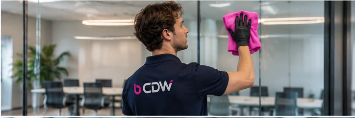
Buiten & projecten
Ramen en glas
Ramen, glazen wanden en lichtstraten, binnen en buiten, op een vaste planning.
Vaste ploeg, één contactpersoon, heel Vlaanderen.
Filter op type werk. Elke dienst stemmen we af op je locatie, je shifts en je planning.

Ramen, glazen wanden en lichtstraten, binnen en buiten, op een vaste planning.
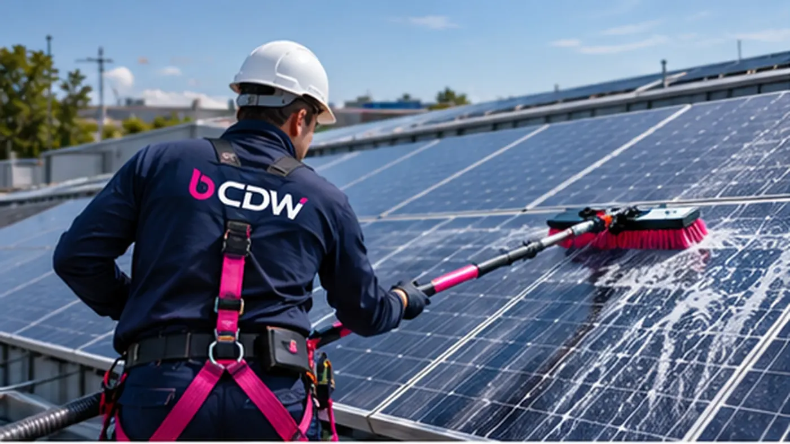
Panelen op bedrijfsdaken zacht gereinigd, zonder agressieve middelen.
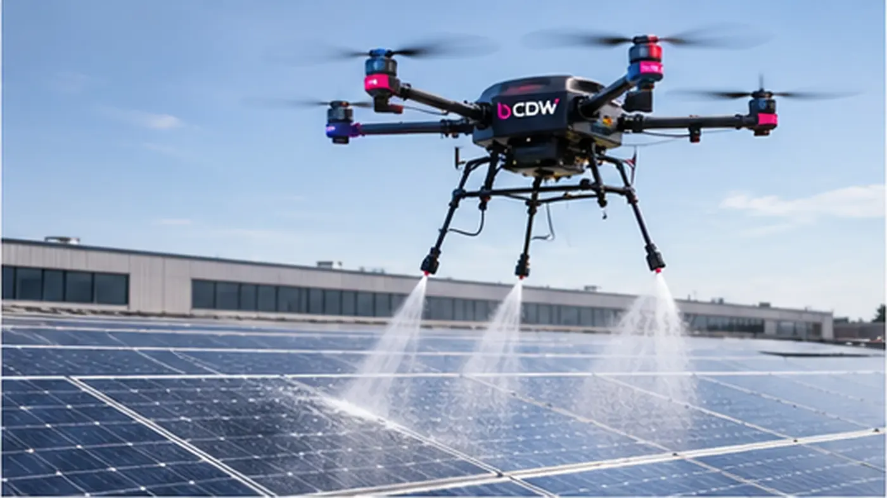
Drone-reiniging voor grote of moeilijk bereikbare industriële daken, met minder werk op hoogte.
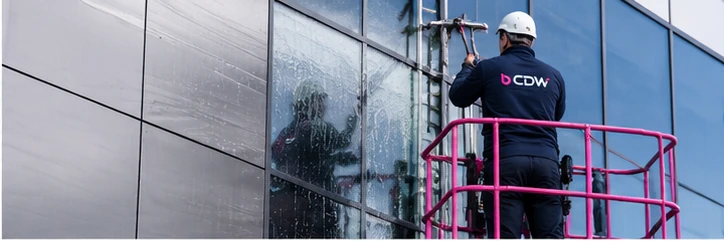
Gevels, PVC, daken, laadkades en verharding, met lage of hoge druk naargelang de ondergrond.
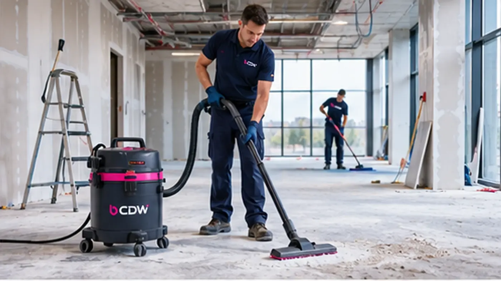
Bouwstof en resten weg na nieuwbouw of renovatie, zodat het gebouw klaar is voor de eerste werkdag.
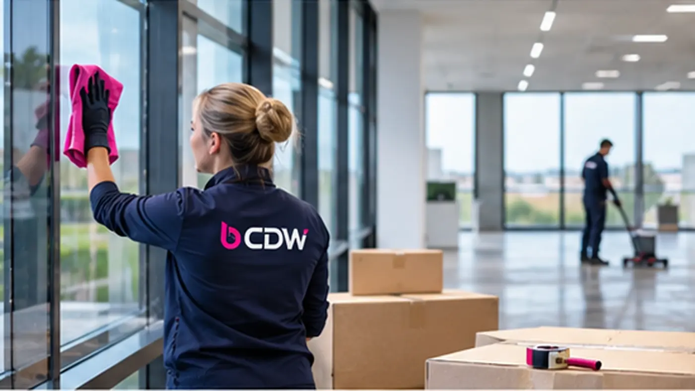
Een leeg pand grondig schoon na een verhuis, ontruiming of het einde van een huur.
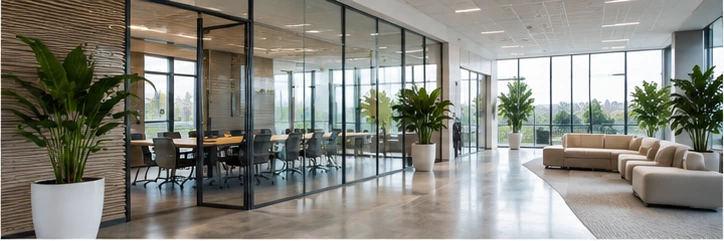
Bureaus, vergaderzalen, keuken en sanitair. Overdag of na de kantooruren.
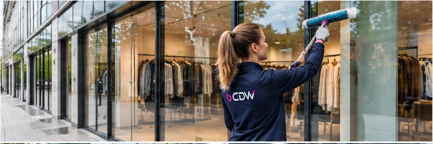
Winkelvloer, inkom, paskamers en etalage, ingepland rond je openingsuren.
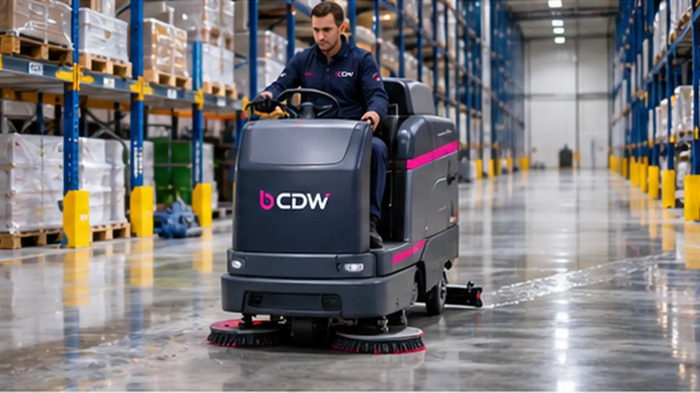
Magazijnen, bedrijfshallen en logistieke sites, afgestemd op je shifts en planning.
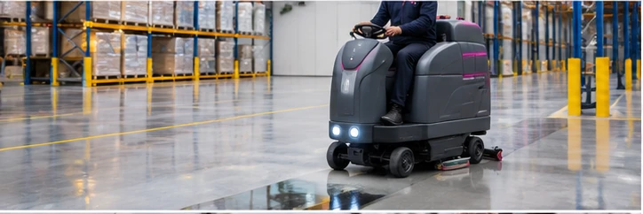
Schrobzuigen van betonvloeren, coatings en loopzones, met de juiste machine per vloer.
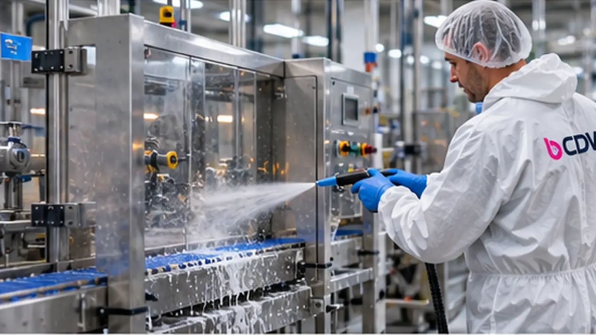
Lijnen, machines en productieruimtes, volgens je reinigings- en hygiëneplan.
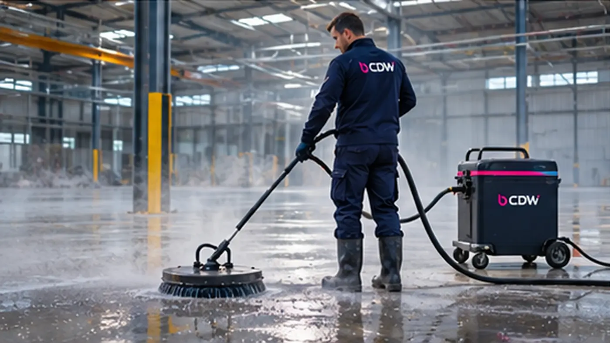
Eenmalige of periodieke grondige reiniging, bijvoorbeeld tijdens een stilstand.
Vier stappen, van eerste beschrijving tot opvolging.
Illustratieve beelden. In je echte rapport verschijnen de foto’s van jouw locatie.
Voorbeeld: een dispenser is bijna leeg. We vermelden de ruimte en de afgesproken vervolgstap.
Ter opvolgingVoorbeeldrapport · geen echte klantgegevens of uitgevoerde opdracht.
Je hoeft niet te controleren of te bellen. Het fotorapport landt na elke shift in je mailbox, met foto's en een korte checklist per zone.
Een haven werkt anders dan een zorginstelling. We volgen het reinigings- en hygiëneplan dat bij jouw sector hoort.
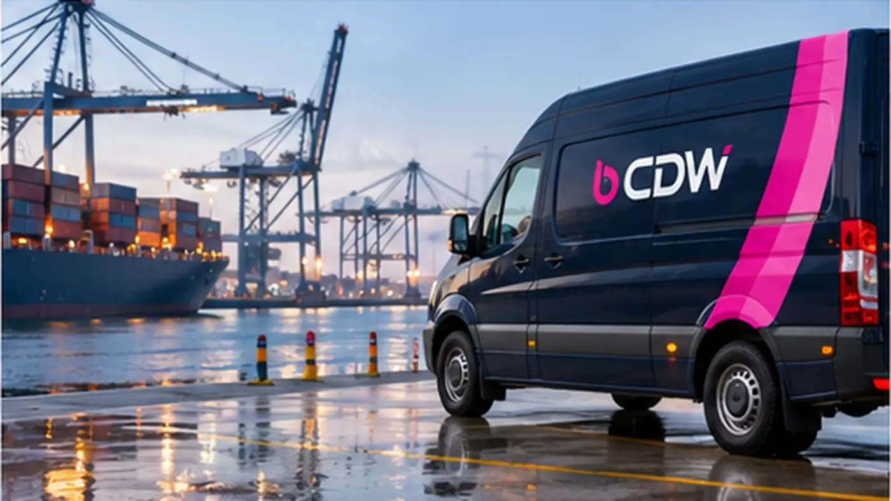
Kades, magazijnen en doorrijzones. We werken rond lossen en laden.
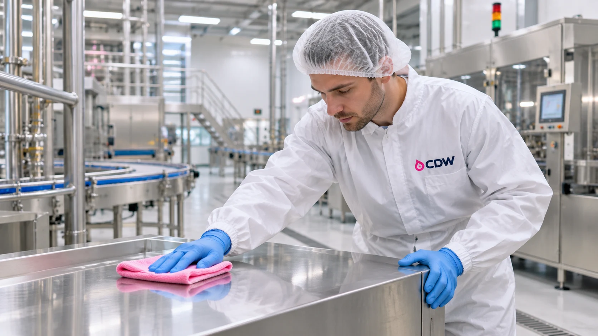
Volgens je hygiëneplan, met gescheiden materiaal per zone.
Lijnen en hallen, gepland tijdens stilstand of tussen shifts.
Bureaus en vergaderzalen, overdag of na de kantooruren.
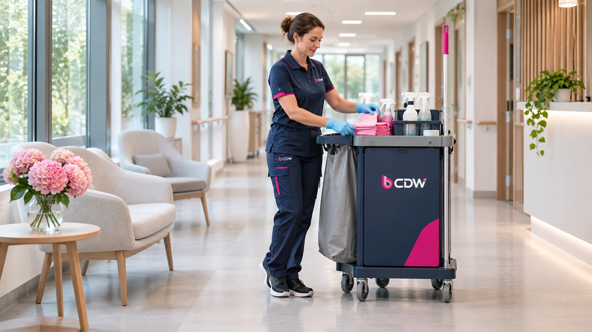
Discreet en volgens protocol, rond bezoekuren en zorgmomenten.
Van de kust tot Limburg: we werken in heel Vlaanderen. Klik op een stad om de regio te bekijken.
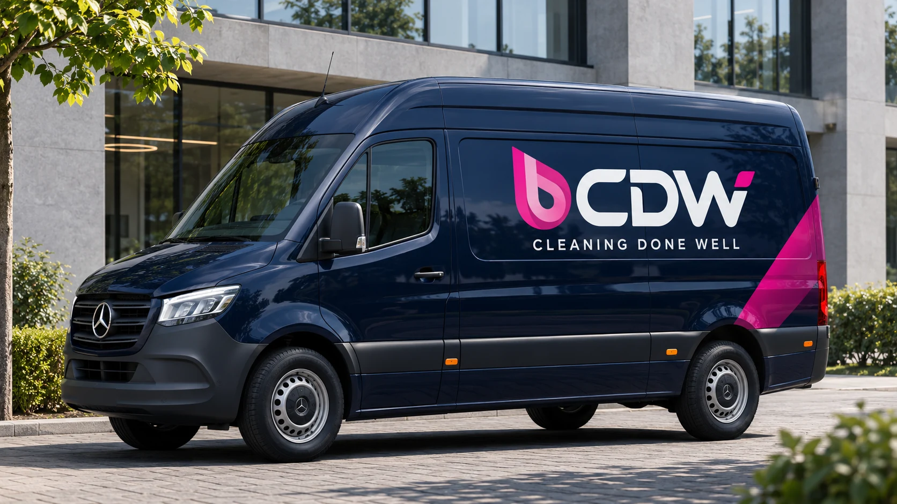
Thuisbasis van CDW. Kantoren, haven, zorg en retail in en rond Gent.
Schoonmaak in GentJe stad staat er niet tussen? We komen overal in Vlaanderen. Geef je postcode op in de aanvraag.
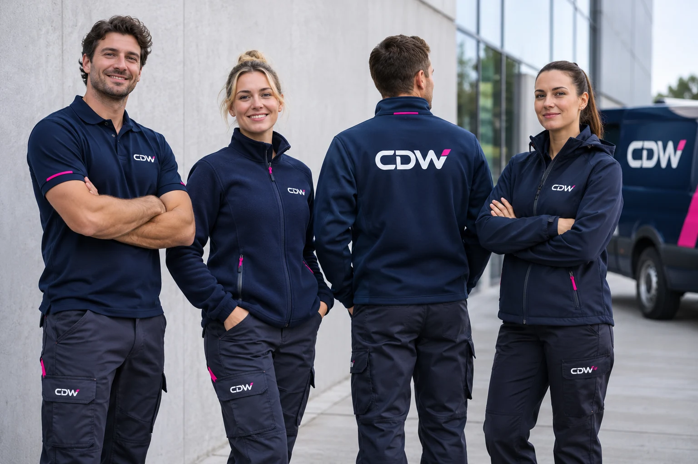
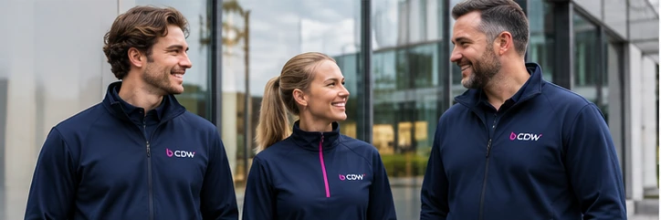
CDW richt zich op de schoonmaak van kantoren, winkels en bedrijfssites, binnen en buiten. We vertrekken van je locatie en de manier waarop je bedrijf werkt. Zo leggen we vooraf vast wat er moet gebeuren, wanneer en hoe vaak.
Op hoofdlijnen: wat je zelf moet regelen, en wat wij overnemen.
| Wat je nodig hebt | Zelf organiseren | Projectreiniger | |
|---|---|---|---|
| Vaste ploeg die je site kent | Ja | Ja | Volgens afspraken |
| Vervanging bij ziekte of verlof | Wij regelen het | Zelf regelen | Zelf afspreken |
| Foto's en checklist na de shift | Standaard | Zelf opzetten | Zelf afspreken |
| Materiaal, machines en producten | Inbegrepen | Zelf aankopen | Zelf afspreken |
| Werk op hoogte, panelen, industrie | Taakgerichte werkafspraken | Opleiding en materiaal nodig | Specialist nodig |
| Opschalen bij piek of stilstand | Ploeg schaalt mee | Vaste capaciteit | Beperkt |
| Eén aanspreekpunt voor planning en vragen | Ja | HR en planning intern | Zelf afspreken |
Indicatieve vergelijking van organisatiemodellen, niet van specifieke aanbieders. De concrete taken, materialen en afspraken leggen we vast in je voorstel.
Staat je vraag er niet bij? Beschrijf je locatie en stel je vraag bij je aanvraag.
Bel ons rechtstreeks of stel je vraag bij je aanvraag.
Vertel ons wat je nodig hebt. Je kiest de diensten, wij stemmen de aanpak af op je locatie.